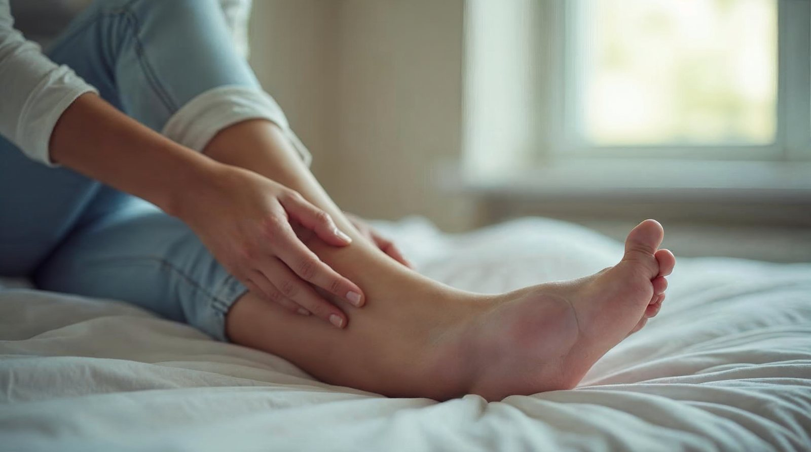
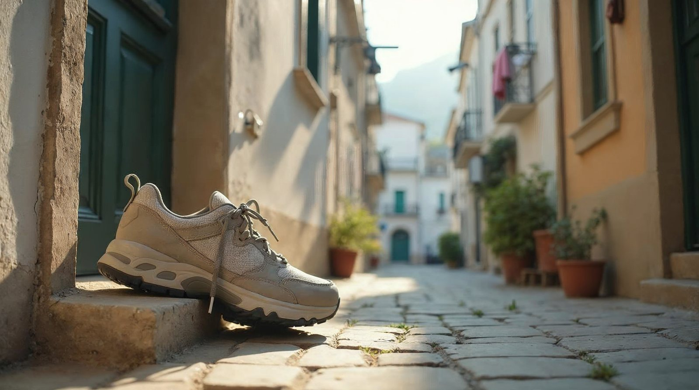
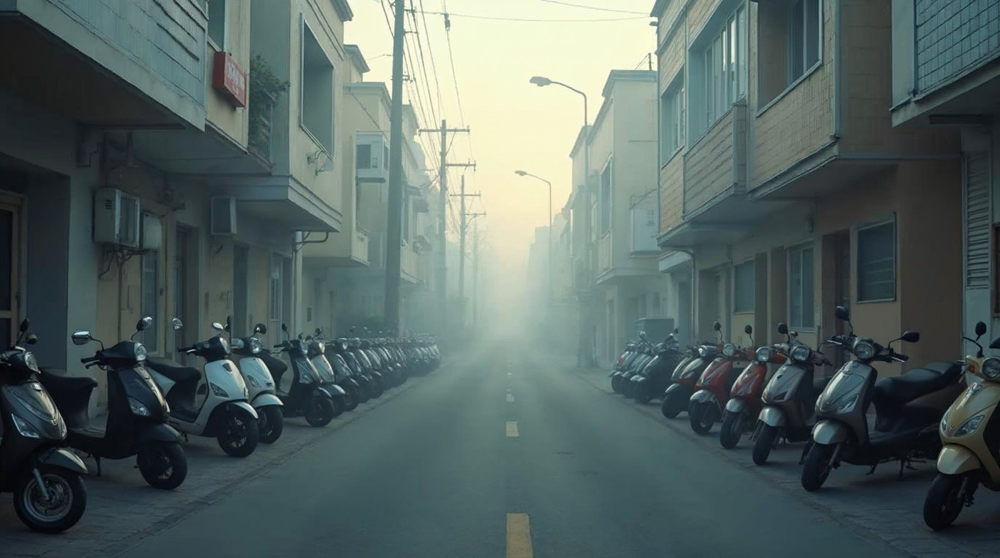
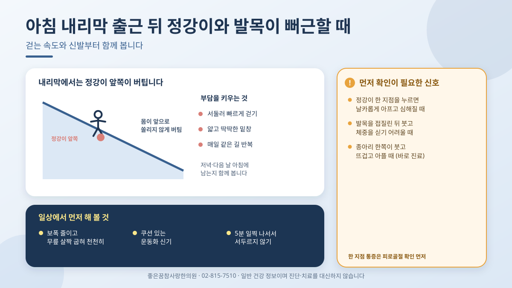

이종호 한의사 감수좋은꿈참사랑한의원 대표원장 (한의사 면허번호 19769)발행 2026-11-24 · 수정 2026-11-25
이 글의 차례
아침마다 내리막길을 서둘러 내려간 뒤 정강이 앞쪽과 발목이 뻐근하다면, 보폭과 속도를 줄이고 쿠션 있는 신발로 바꾸는 것부터 해 보시길 권합니다. 다만 정강이 한 지점이 날카롭게 아프고 걸을수록 심해진다면 피로골절 같은 문제를 먼저 확인해야 합니다.
상도동처럼 언덕이 많은 동네에서는 집을 나서자마자 내리막을 걸어 역으로 향하는 출근길이 매일 빠짐없이 반복되기도 합니다. 그래서 주말에 쉬면 덜하다가 월요일 출근을 며칠 하고 나면 다시 뻐근해지는 양상이 흔합니다.
왜 이런 불편이 생길 수 있나요
- 내리막에서는 몸이 앞으로 쏠리지 않도록 정강이 앞쪽 근육이 계속 버팁니다. 발뒤꿈치가 닿은 뒤 발바닥이 탁 떨어지지 않게 천천히 내려 주는 일도 이 근육이 맡습니다.
- 출근 시간에 쫓겨 빠르게 내려가면 발이 땅에 닿을 때의 충격이 커집니다.
- 밑창이 얇고 딱딱한 신발이나 굽 있는 구두는 충격을 덜 흡수하고 발목을 불안하게 만들 수 있습니다.
- 매일 같은 길을 반복하면 회복할 시간 없이 부담이 쌓일 수 있습니다.
- 추운 아침에는 근육이 덜 풀린 상태로 집을 나서자마자 내리막을 걷게 됩니다.
- 예전에 발목을 접질린 적이 있으면 내리막에서 발목이 흔들리지 않도록 주변 근육이 더 긴장하기도 합니다.
- 휴대폰을 보며 내리막을 걸으면 발밑을 덜 살피게 되어 발목이 꺾이거나 걸음이 흐트러지기 쉽습니다.
먼저 이렇게 여쭙니다
- 내리막길을 매일 얼마나, 어떤 속도로 걸으시나요?
- 뻐근한 곳이 정강이 앞쪽인가요, 안쪽인가요, 발목인가요?
- 출근 때 주로 어떤 신발을 신으시나요?
- 저녁이나 다음 날 아침까지 통증이 남아 있나요?
- 최근 걷는 양이나 운동량이 늘었나요?
- 예전에 발목을 접질리거나 다친 적이 있나요?
- 다시 오신 분께는 지난번 이후 출근길 걸음과 신발을 바꿔 보셨는지부터 이어서 여쭙니다.
일상에서 먼저 해 볼 수 있는 것
- 내리막에서는 보폭을 줄이고 무릎을 살짝 굽혀 천천히 걷기
- 밑창이 딱딱하고 얇은 신발 대신 쿠션 있는 운동화 신기, 구두는 회사에서 갈아 신기
- 5분 일찍 나서서 내리막을 서두르지 않기
- 계단이 이어지는 길에서는 발 전체를 디디며 한 계단씩 내려가고, 손잡이가 있으면 잡기
- 추운 아침에는 집에서 발목을 천천히 돌리고 종아리를 가볍게 늘린 뒤 나서기
- 저녁에 종아리와 정강이 앞쪽을 가볍게 풀어 주기
- 가능한 날은 경사가 덜한 길로 돌아가 보기
상황별 예시
- 예를 들어 언덕 위 집에서 상도역까지 매일 아침 서둘러 내려가는 직장인의 경우, 구두를 신고 보폭을 크게 내딛다 보면 회사에 도착할 무렵 정강이 앞쪽이 땅기고 저녁까지 뻐근함이 남을 수 있습니다. 운동화로 내려간 뒤 회사에서 갈아 신거나, 5분 일찍 나서 속도를 줄이는 것부터 해 볼 수 있습니다.
- 예를 들어 건강을 위해 한 정거장 먼저 내려 걷기 시작하면서 내리막 구간이 갑자기 길어진 경우, 걷는 양이 한꺼번에 늘어 정강이 안쪽까지 시큰할 수 있습니다. 늘린 거리를 절반으로 줄였다가 1~2주에 걸쳐 다시 늘려 보는 방법을 함께 정합니다.
- 예를 들어 무릎이 불편한 어르신이 아침 장보기를 위해 내리막을 내려가는 경우, 무릎을 덜 굽히려고 발목과 정강이로 버티게 되어 발목 앞쪽이 뻐근할 수 있습니다. 보폭을 줄이고 지팡이나 걷기용 스틱을 쓰는 방법을 함께 살펴봅니다.

스스로 점검해 보세요
- 출근길 내리막을 거의 뛰듯이 내려간다
- 밑창이 얇은 구두나 납작한 신발로 내리막을 걷는다
- 내리막을 걸은 날 저녁 정강이 앞쪽이 땅긴다
- 주말에 쉬면 덜하다가 출근을 며칠 하면 다시 뻐근하다
- 최근 걷는 양이나 운동량이 갑자기 늘었다
- 정강이 한 지점을 누르면 콕 집어 아픈 곳이 있다
- 한쪽 종아리만 붓고 뜨겁다
앞의 다섯 가지는 걸음과 신발부터 바꿔 볼 신호이고, 뒤의 두 가지에 해당하면 먼저 확인이 필요합니다.

한의원에서 함께 살필 수 있는 경우
- 걸을 때마다 정강이나 발목이 뻐근한 경우 걷는 모습과 아픈 지점을 함께 살핍니다.
- 무릎이나 허리까지 불편이 이어지는 경우 다리 전체의 균형을 함께 살핍니다.
- 발이 차고 붓는 느낌이 있는 경우 다리의 순환과 생활 리듬도 이어서 여쭙니다.
좋은꿈참사랑한의원에서는 첫 방문 때 출근길의 경사와 걷는 시간, 신발, 아픈 시간대를 먼저 듣고 맥부터 짚어 봅니다. 그 뒤 진료실에서 몇 걸음 걸어 보시게 하고, 발목을 위아래로 움직일 때와 발끝으로 설 때 어디가 불편한지, 정강이와 발목의 아픈 지점을 눌러 보며 확인합니다.
필요하다고 판단될 때 초음파로 힘줄과 주변을 살피고, 상태에 맞춰 침·약침·추나·온열 등을 정합니다. 귀가 전에는 내리막을 걷는 요령과 저녁에 할 수 있는 동작, 다음 방문 때까지의 걷기 양을 함께 정해 드립니다. 평소 출근할 때 신는 신발을 신고 오시면 걷는 모습을 보기가 쉽습니다.

얼마나 지켜보고 언제 상담할까요
- 속도와 신발을 바꾼 뒤 1~2주 지켜보며 저녁 뻐근함이 어떻게 달라지는지 보세요.
- 2주가 지나도 출근한 날마다 같은 자리가 아프거나 아픈 시간이 점점 길어진다면 상담을 권합니다.
- 걸을수록 더 아프고 쉬어도 가라앉지 않거나 한 지점이 날카롭게 아프다면 기다리지 말고 확인하세요.
- 종아리 한쪽이 붓고 뜨거우면 바로 진료를 받으세요.
이렇게 기록해 오시면 상담이 쉬워집니다
- 내리막길의 길이와 걷는 시간
- 아픈 시간대(걸을 때, 저녁, 다음 날 아침)
- 출근 때 신는 신발
- 누르면 아픈 지점이 있는지(손가락으로 짚어 사진을 찍어 오셔도 됩니다)
- 예전에 발목을 다친 적이 있다면 그 시기
- 휴대폰에 기록된 하루 걸음 수(최근 늘었는지 비교하기 좋습니다)
이런 증상은 먼저 확인이 필요합니다
- 정강이의 한 지점을 누르면 날카롭게 아프고 걸을수록 심해지는 경우(피로골절 확인 필요)
- 발목을 접질린 뒤 붓고 멍이 들어 체중을 싣기 어려운 경우
이런 신호가 있으면 한의원보다 가까운 병원이나 응급실을 먼저 찾으세요.
관련 글
- 상도동 언덕길과 계단을 매일 오르내릴 때 무릎은 어떻게 챙기나요?
- 예전에 발목을 자주 삐었는데 요즘 무릎과 허리가 불편하면 연관이 있나요?
- 계단을 내려갈 때 무릎이 아프면 한의원에서는 무엇을 먼저 묻나요?

여쭙는 것
- 내리막길을 매일 얼마나, 어떤 속도로 걸으시나요?
- 뻐근한 곳이 정강이 앞쪽인가요, 안쪽인가요, 발목인가요?
- 출근 때 주로 어떤 신발을 신으시나요?
생활에서 해 볼 것
- 내리막에서는 보폭을 줄이고 무릎을 살짝 굽혀 천천히 걷기
- 밑창이 딱딱하고 얇은 신발 대신 쿠션 있는 운동화 신기, 구두는 회사에서 갈아 신기
- 5분 일찍 나서서 내리막을 서두르지 않기
한의원에서 함께 살필 것
- 걸을 때마다 정강이나 발목이 뻐근한 경우 걷는 모습과 아픈 지점을 함께 살핍니다.
- 무릎이나 허리까지 불편이 이어지는 경우 다리 전체의 균형을 함께 살핍니다.
- 발이 차고 붓는 느낌이 있는 경우 다리의 순환과 생활 리듬도 이어서 여쭙니다.
먼저 확인이 필요한 신호
- 정강이의 한 지점을 누르면 날카롭게 아프고 걸을수록 심해지는 경우(피로골절 확인 필요)
- 발목을 접질린 뒤 붓고 멍이 들어 체중을 싣기 어려운 경우
한눈에 보는 표
| 구분 | 핵심 |
|---|---|
| 여쭙는 것 | 내리막길을 매일 얼마나, 어떤 속도로 걸으시나요? 뻐근한 곳이 정강이 앞쪽인가요, 안쪽인가요, 발목인가요? |
| 생활에서 해 볼 것 | 내리막에서는 보폭을 줄이고 무릎을 살짝 굽혀 천천히 걷기 밑창이 딱딱하고 얇은 신발 대신 쿠션 있는 운동화 신기, 구두는 회사에서 갈아 신기 |
| 한의원에서 함께 살필 것 | 걸을 때마다 정강이나 발목이 뻐근한 경우 걷는 모습과 아픈 지점을 함께 살핍니다. 무릎이나 허리까지 불편이 이어지는 경우 다리 전체의 균형을 함께 살핍니다. |
| 먼저 확인이 필요한 신호 | 정강이의 한 지점을 누르면 날카롭게 아프고 걸을수록 심해지는 경우(피로골절 확인 필요) 발목을 접질린 뒤 붓고 멍이 들어 체중을 싣기 어려운 경우 |
자주 묻는 질문
내리막보다 오르막이 운동이 더 되나요?
오르막은 심장과 허벅지에, 내리막은 무릎과 정강이에 부담이 다르게 갑니다. 통증이 있을 때는 내리막 속도를 줄이는 것부터 권합니다.
발목 보호대를 해야 하나요?
접질린 적이 없고 뻐근한 정도라면 신발과 걷는 속도를 먼저 바꿔 보시는 것이 좋습니다.
아플 때 달리기나 등산은 쉬어야 하나요?
통증이 있는 동안은 충격이 큰 운동은 줄이고, 걷기도 평지 위주로 바꾸는 것을 권합니다. 다시 늘리는 순서는 진료 때 함께 정합니다.
출근 전에 할 만한 준비 동작이 있나요?
발목을 천천히 돌리고 종아리를 가볍게 늘려 준 뒤 나서 보세요. 아프면 멈추고 진료 때 맞는 동작을 함께 정합니다.
좋은꿈참사랑한의원은 재진 때 지난번 이야기부터 이어서 여쭙니다. 진료시간과 예약은 오시는 길에서 확인하세요.
어디서 상담받을 수 있나요?
좋은꿈참사랑한의원은 서울 동작구 만양로2길 2 신성빌딩 3층·5층(서울 동작구 상도동, 7호선 상도역 3번 출구 근처)에 있습니다. 한의사 3명(이종호 대표원장, 조영기 수석진료원장, 정원영 진료원장)이 진료합니다. 진료시간은 평일 09:30~20:00(점심 13:00~14:00), 토·일·공휴일 09:30~15:00이며, 방문 전 전화로 확인을 권합니다. 예약은 네이버 예약, 카카오톡 상담, 전화 02-815-7510로 받습니다.
이 글은 일반적인 건강 정보이며 개인의 진단이나 치료를 대신하지 않습니다. 증상이 있거나 복용 중인 약이 있다면 진료를 통해 확인하세요. 치료 효과는 개인마다 다를 수 있습니다.
작성 기준: 일반적으로 알려져 있는 건강 정보를 참고해 정리했습니다(대표원장 감수). 증상 기록은 1~2주 동안 하루 1회, 비슷한 시간에 적어 오시면 지난 상태와 비교하기 쉽습니다.